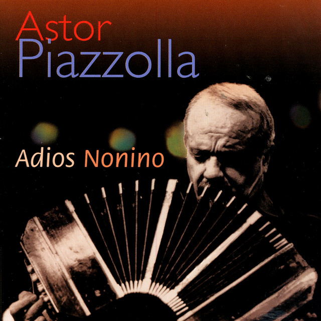

Adiós Nonino je jedna z nejdojemnějších skladeb, které Piazzolla napsal. Vznikla po smrti jeho otce a odráží hluboký osobní zármutek. Melodie je plná smutku i naděje, což jí dodává silný emocionální účinek. Patří mezi nejhranější skladby v jeho repertoáru. Publikum často vnímá tuto skladbu jako symbol lásky a vzpomínek.
Adiós Nonino se objevuje na mnoha koncertech a vzpomínkových akcích. Hudebníci oceňují její výrazové možnosti a melodickou krásu. Skladba je náročná na interpretaci, protože vyžaduje citlivý přístup. Piazzolla v ní zachytil osobní zkušenost, kterou dokáže pochopit téměř každý. Díky tomu se stala univerzálně sdělným dílem. Video ukázka:
